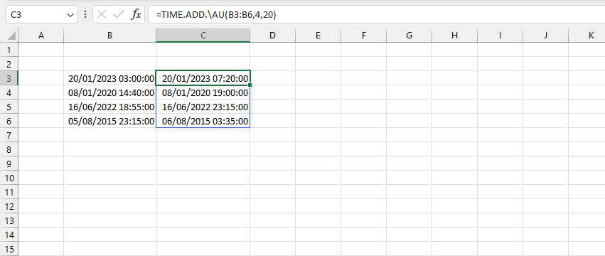

VD1: tính ngày-giờ trả về sau khi thêm 4 giờ và 20 phút.
Related function
MONTH.ADD Trả về ngày tháng sau số tháng xác định.
YEAR.ADD Trả về ngày tháng sau số năm xác định.
CALENDARS Trả về lịch 2D một năm bất kỳ .
MODE Trả về phần tử lặp lại nhiều nhất trong mảng cho trước.
Return to Home